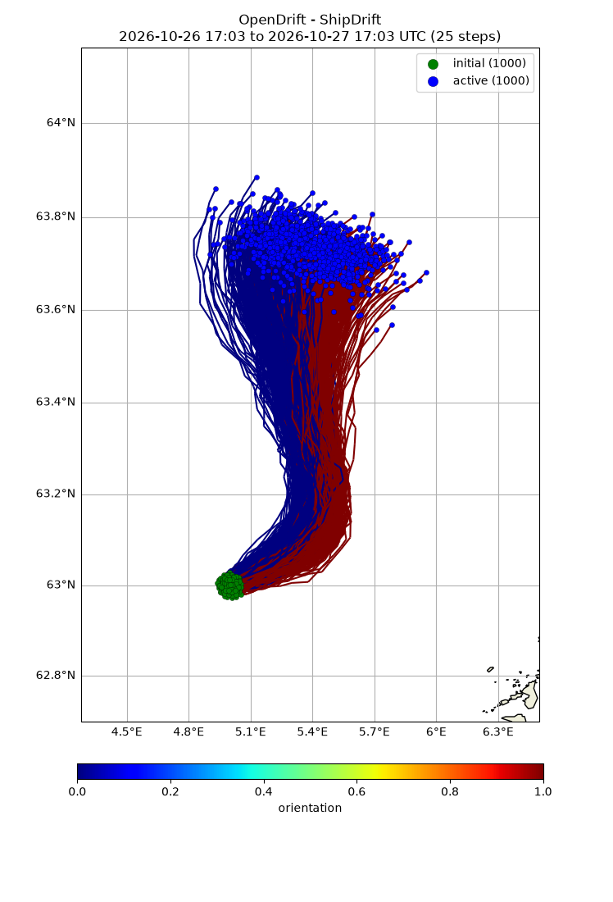
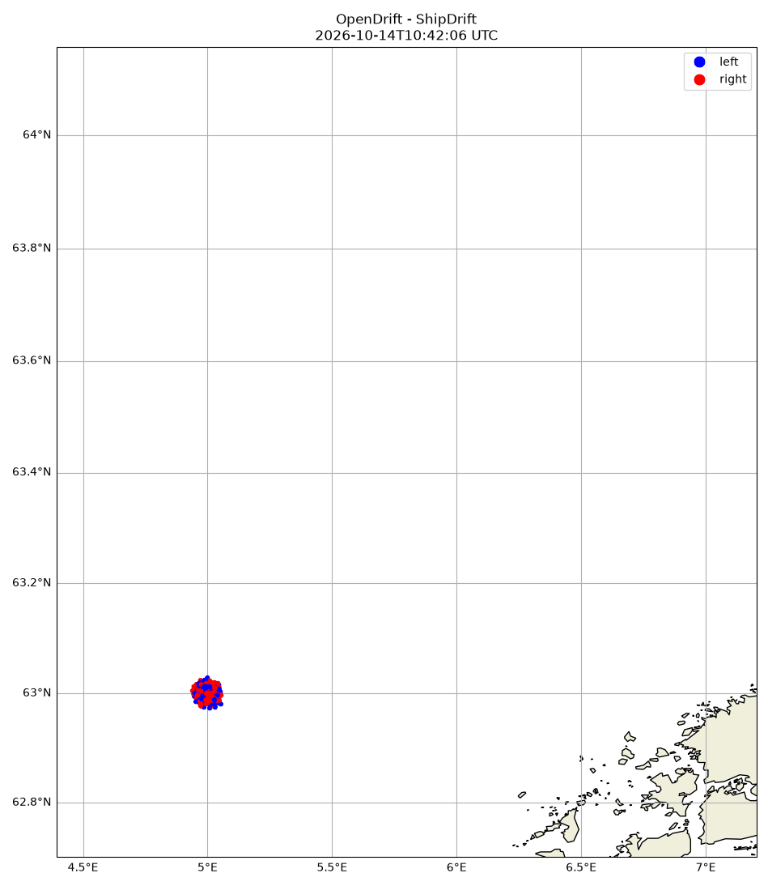

Note
Go to the end to download the full example code.
Ship drift
from datetime import datetime
from opendrift.models.shipdrift import ShipDrift
o = ShipDrift(loglevel=20)
o.add_readers_from_list([
'https://thredds.met.no/thredds/dodsC/cmems/topaz6/dataset-topaz6-arc-15min-3km-be.ncml',
'https://thredds.met.no/thredds/dodsC/mepslatest/meps_lagged_6_h_latest_2_5km_latest.nc',
'https://thredds.met.no/thredds/dodsC/cmems/mywavewam3km/dataset-wam-arctic-1hr3km-be.ncml'
])
17:03:38 INFO opendrift:569: OpenDriftSimulation initialised (version 1.14.11 / v1.14.12-66-g07283eb)
Seed ship elements at defined position and time Note: beam/length ratio is larger than allowed, but is then clipped internally
o.seed_elements(lon=5.0, lat=63.0, radius=1000, number=1000,
time=datetime.now(),
length=80.0, beam=20.0, height=9.0, draft=4.0)
17:03:38 WARNING opendrift.models.shipdrift:180: Ratio of beam to length should be in range 0.12 to 0.18, given range is 0.25-0.25. Using border value.
17:03:38 INFO opendrift.models.basemodel.environment:203: Adding a global landmask from GSHHG
17:03:44 INFO opendrift.models.basemodel.environment:227: Fallback values will be used for the following variables which have no readers:
17:03:44 INFO opendrift.models.basemodel.environment:230: horizontal_diffusivity: 100.000000
17:03:44 INFO opendrift.models.basemodel.environment:230: sea_surface_wave_stokes_drift_x_velocity: 0.000000
17:03:44 INFO opendrift.models.basemodel.environment:230: sea_surface_wave_stokes_drift_y_velocity: 0.000000
17:03:44 INFO opendrift.models.basemodel.environment:230: sea_surface_wave_significant_height: 0.000000
17:03:44 INFO opendrift.models.basemodel.environment:230: sea_surface_wave_mean_period_from_variance_spectral_density_second_frequency_moment: 0.000000
Running model
o.run(steps=24, stop_on_error=True)
17:03:44 INFO opendrift:1922: Storing previous values of element property lon because of condition (('general:coastline_action', 'in', ['stranding', 'previous']), 'or', ('general:seafloor_action', 'in', ['previous']))
17:03:44 INFO opendrift:1922: Storing previous values of element property lat because of condition (('general:coastline_action', 'in', ['stranding', 'previous']), 'or', ('general:seafloor_action', 'in', ['previous']))
17:03:44 INFO opendrift:958: Using existing reader for land_binary_mask to move elements to ocean
17:03:44 INFO opendrift:990: All points are in ocean
17:03:44 INFO opendrift:2238: 2026-10-26 17:03:38.139759 - step 1 of 24 - 1000 active elements (0 deactivated)
17:03:44 INFO opendrift.readers:67: Opening file with xr.open_dataset
17:03:47 INFO opendrift.readers.reader_netCDF_CF_generic:340: Detected dimensions: {'x': 'x', 'y': 'y', 'time': 'time'}
17:03:47 INFO opendrift.readers:67: Opening file with xr.open_dataset
17:03:48 INFO opendrift.readers.reader_netCDF_CF_generic:340: Detected dimensions: {'time': 'time', 'x': 'x', 'y': 'y'}
17:03:48 INFO opendrift.readers:67: Opening file with xr.open_dataset
17:03:56 INFO opendrift.readers.reader_netCDF_CF_generic:340: Detected dimensions: {'y': 'rlat', 'x': 'rlon', 'time': 'time'}
17:03:58 WARNING opendrift.readers.interpolation.structured:63: Ensemble data currently not extrapolated towards seafloor
17:03:58 WARNING opendrift.readers.interpolation.structured:63: Ensemble data currently not extrapolated towards seafloor
17:03:58 WARNING opendrift.readers.interpolation.structured:63: Ensemble data currently not extrapolated towards seafloor
17:03:58 WARNING opendrift.readers.interpolation.structured:63: Ensemble data currently not extrapolated towards seafloor
17:04:00 INFO opendrift.models.shipdrift:310: Using Stokes drift direction as wave direction
17:04:00 INFO opendrift:2238: 2026-10-26 18:03:38.139759 - step 2 of 24 - 1000 active elements (0 deactivated)
17:04:01 WARNING opendrift.readers.interpolation.structured:63: Ensemble data currently not extrapolated towards seafloor
17:04:01 WARNING opendrift.readers.interpolation.structured:63: Ensemble data currently not extrapolated towards seafloor
17:04:02 INFO opendrift.models.shipdrift:310: Using Stokes drift direction as wave direction
17:04:02 INFO opendrift:2238: 2026-10-26 19:03:38.139759 - step 3 of 24 - 1000 active elements (0 deactivated)
17:04:03 WARNING opendrift.readers.interpolation.structured:63: Ensemble data currently not extrapolated towards seafloor
17:04:03 WARNING opendrift.readers.interpolation.structured:63: Ensemble data currently not extrapolated towards seafloor
17:04:04 INFO opendrift.models.shipdrift:310: Using Stokes drift direction as wave direction
17:04:04 INFO opendrift:2238: 2026-10-26 20:03:38.139759 - step 4 of 24 - 1000 active elements (0 deactivated)
17:04:05 WARNING opendrift.readers.interpolation.structured:63: Ensemble data currently not extrapolated towards seafloor
17:04:05 WARNING opendrift.readers.interpolation.structured:63: Ensemble data currently not extrapolated towards seafloor
17:04:06 INFO opendrift.models.shipdrift:310: Using Stokes drift direction as wave direction
17:04:06 INFO opendrift:2238: 2026-10-26 21:03:38.139759 - step 5 of 24 - 1000 active elements (0 deactivated)
17:04:07 WARNING opendrift.readers.interpolation.structured:63: Ensemble data currently not extrapolated towards seafloor
17:04:07 WARNING opendrift.readers.interpolation.structured:63: Ensemble data currently not extrapolated towards seafloor
17:04:08 INFO opendrift.models.shipdrift:310: Using Stokes drift direction as wave direction
17:04:08 INFO opendrift:2238: 2026-10-26 22:03:38.139759 - step 6 of 24 - 1000 active elements (0 deactivated)
17:04:10 WARNING opendrift.readers.interpolation.structured:63: Ensemble data currently not extrapolated towards seafloor
17:04:10 WARNING opendrift.readers.interpolation.structured:63: Ensemble data currently not extrapolated towards seafloor
17:04:11 INFO opendrift.models.shipdrift:310: Using Stokes drift direction as wave direction
17:04:11 INFO opendrift:2238: 2026-10-26 23:03:38.139759 - step 7 of 24 - 1000 active elements (0 deactivated)
17:04:12 WARNING opendrift.readers.interpolation.structured:63: Ensemble data currently not extrapolated towards seafloor
17:04:12 WARNING opendrift.readers.interpolation.structured:63: Ensemble data currently not extrapolated towards seafloor
17:04:13 INFO opendrift.models.shipdrift:310: Using Stokes drift direction as wave direction
17:04:13 INFO opendrift:2238: 2026-10-27 00:03:38.139759 - step 8 of 24 - 1000 active elements (0 deactivated)
17:04:16 WARNING opendrift.readers.interpolation.structured:63: Ensemble data currently not extrapolated towards seafloor
17:04:16 WARNING opendrift.readers.interpolation.structured:63: Ensemble data currently not extrapolated towards seafloor
17:04:17 INFO opendrift.models.shipdrift:310: Using Stokes drift direction as wave direction
17:04:17 INFO opendrift:2238: 2026-10-27 01:03:38.139759 - step 9 of 24 - 1000 active elements (0 deactivated)
17:04:18 WARNING opendrift.readers.interpolation.structured:63: Ensemble data currently not extrapolated towards seafloor
17:04:18 WARNING opendrift.readers.interpolation.structured:63: Ensemble data currently not extrapolated towards seafloor
17:04:19 INFO opendrift.models.shipdrift:310: Using Stokes drift direction as wave direction
17:04:19 INFO opendrift:2238: 2026-10-27 02:03:38.139759 - step 10 of 24 - 1000 active elements (0 deactivated)
17:04:20 WARNING opendrift.readers.interpolation.structured:63: Ensemble data currently not extrapolated towards seafloor
17:04:20 WARNING opendrift.readers.interpolation.structured:63: Ensemble data currently not extrapolated towards seafloor
17:04:22 INFO opendrift.models.shipdrift:310: Using Stokes drift direction as wave direction
17:04:22 INFO opendrift:2238: 2026-10-27 03:03:38.139759 - step 11 of 24 - 1000 active elements (0 deactivated)
17:04:24 WARNING opendrift.readers.interpolation.structured:63: Ensemble data currently not extrapolated towards seafloor
17:04:24 WARNING opendrift.readers.interpolation.structured:63: Ensemble data currently not extrapolated towards seafloor
17:04:25 INFO opendrift.models.shipdrift:310: Using Stokes drift direction as wave direction
17:04:25 INFO opendrift:2238: 2026-10-27 04:03:38.139759 - step 12 of 24 - 1000 active elements (0 deactivated)
17:04:26 WARNING opendrift.readers.interpolation.structured:63: Ensemble data currently not extrapolated towards seafloor
17:04:26 WARNING opendrift.readers.interpolation.structured:63: Ensemble data currently not extrapolated towards seafloor
17:04:27 INFO opendrift.models.shipdrift:310: Using Stokes drift direction as wave direction
17:04:27 INFO opendrift:2238: 2026-10-27 05:03:38.139759 - step 13 of 24 - 1000 active elements (0 deactivated)
17:04:29 WARNING opendrift.readers.interpolation.structured:63: Ensemble data currently not extrapolated towards seafloor
17:04:29 WARNING opendrift.readers.interpolation.structured:63: Ensemble data currently not extrapolated towards seafloor
17:04:29 INFO opendrift.models.shipdrift:310: Using Stokes drift direction as wave direction
17:04:29 INFO opendrift:2238: 2026-10-27 06:03:38.139759 - step 14 of 24 - 1000 active elements (0 deactivated)
17:04:31 WARNING opendrift.readers.interpolation.structured:63: Ensemble data currently not extrapolated towards seafloor
17:04:31 WARNING opendrift.readers.interpolation.structured:63: Ensemble data currently not extrapolated towards seafloor
17:04:31 INFO opendrift.models.shipdrift:310: Using Stokes drift direction as wave direction
17:04:31 INFO opendrift:2238: 2026-10-27 07:03:38.139759 - step 15 of 24 - 1000 active elements (0 deactivated)
17:04:33 WARNING opendrift.readers.interpolation.structured:63: Ensemble data currently not extrapolated towards seafloor
17:04:33 WARNING opendrift.readers.interpolation.structured:63: Ensemble data currently not extrapolated towards seafloor
17:04:34 INFO opendrift.models.shipdrift:310: Using Stokes drift direction as wave direction
17:04:34 INFO opendrift:2238: 2026-10-27 08:03:38.139759 - step 16 of 24 - 1000 active elements (0 deactivated)
17:04:35 WARNING opendrift.readers.interpolation.structured:63: Ensemble data currently not extrapolated towards seafloor
17:04:35 WARNING opendrift.readers.interpolation.structured:63: Ensemble data currently not extrapolated towards seafloor
17:04:36 INFO opendrift.models.shipdrift:310: Using Stokes drift direction as wave direction
17:04:36 INFO opendrift:2238: 2026-10-27 09:03:38.139759 - step 17 of 24 - 1000 active elements (0 deactivated)
17:04:37 WARNING opendrift.readers.interpolation.structured:63: Ensemble data currently not extrapolated towards seafloor
17:04:37 WARNING opendrift.readers.interpolation.structured:63: Ensemble data currently not extrapolated towards seafloor
17:04:38 INFO opendrift.models.shipdrift:310: Using Stokes drift direction as wave direction
17:04:38 INFO opendrift:2238: 2026-10-27 10:03:38.139759 - step 18 of 24 - 1000 active elements (0 deactivated)
17:04:40 WARNING opendrift.readers.interpolation.structured:63: Ensemble data currently not extrapolated towards seafloor
17:04:40 WARNING opendrift.readers.interpolation.structured:63: Ensemble data currently not extrapolated towards seafloor
17:04:41 INFO opendrift.models.shipdrift:310: Using Stokes drift direction as wave direction
17:04:41 INFO opendrift:2238: 2026-10-27 11:03:38.139759 - step 19 of 24 - 1000 active elements (0 deactivated)
17:04:43 WARNING opendrift.readers.interpolation.structured:63: Ensemble data currently not extrapolated towards seafloor
17:04:43 WARNING opendrift.readers.interpolation.structured:63: Ensemble data currently not extrapolated towards seafloor
17:04:44 INFO opendrift.models.shipdrift:310: Using Stokes drift direction as wave direction
17:04:44 INFO opendrift:2238: 2026-10-27 12:03:38.139759 - step 20 of 24 - 1000 active elements (0 deactivated)
17:04:45 WARNING opendrift.readers.interpolation.structured:63: Ensemble data currently not extrapolated towards seafloor
17:04:45 WARNING opendrift.readers.interpolation.structured:63: Ensemble data currently not extrapolated towards seafloor
17:04:46 INFO opendrift.models.shipdrift:310: Using Stokes drift direction as wave direction
17:04:46 INFO opendrift:2238: 2026-10-27 13:03:38.139759 - step 21 of 24 - 1000 active elements (0 deactivated)
17:04:48 WARNING opendrift.readers.interpolation.structured:63: Ensemble data currently not extrapolated towards seafloor
17:04:48 WARNING opendrift.readers.interpolation.structured:63: Ensemble data currently not extrapolated towards seafloor
17:04:49 INFO opendrift.models.shipdrift:310: Using Stokes drift direction as wave direction
17:04:49 INFO opendrift:2238: 2026-10-27 14:03:38.139759 - step 22 of 24 - 1000 active elements (0 deactivated)
17:04:50 WARNING opendrift.readers.interpolation.structured:63: Ensemble data currently not extrapolated towards seafloor
17:04:50 WARNING opendrift.readers.interpolation.structured:63: Ensemble data currently not extrapolated towards seafloor
17:04:51 INFO opendrift.models.shipdrift:310: Using Stokes drift direction as wave direction
17:04:51 INFO opendrift:2238: 2026-10-27 15:03:38.139759 - step 23 of 24 - 1000 active elements (0 deactivated)
17:04:52 WARNING opendrift.readers.interpolation.structured:63: Ensemble data currently not extrapolated towards seafloor
17:04:52 WARNING opendrift.readers.interpolation.structured:63: Ensemble data currently not extrapolated towards seafloor
17:04:53 INFO opendrift.models.shipdrift:310: Using Stokes drift direction as wave direction
17:04:53 INFO opendrift:2238: 2026-10-27 16:03:38.139759 - step 24 of 24 - 1000 active elements (0 deactivated)
17:04:55 WARNING opendrift.readers.interpolation.structured:63: Ensemble data currently not extrapolated towards seafloor
17:04:55 WARNING opendrift.readers.interpolation.structured:63: Ensemble data currently not extrapolated towards seafloor
17:04:55 INFO opendrift.models.shipdrift:310: Using Stokes drift direction as wave direction
Print and plot results
print(o)
o.plot(linecolor='orientation')
#o.animation(color='orientation', markersize=20, filename="orientation.gif", legend=['left','right'],colorbar=False,cmap='bwr')
o.animation(color='orientation', legend=['left','right'], markersize=20, colorbar=False, cmap='bwr')

===========================
--------------------
Reader performance:
--------------------
global_landmask
0:00:00.0 total
0:00:00.0 preparing
0:00:00.0 reading
0:00:00.0 masking
--------------------
https://thredds.met.no/thredds/dodsC/cmems/topaz6/dataset-topaz6-arc-15min-3km-be.ncml
0:00:17.0 total
0:00:00.0 preparing
0:00:16.9 reading
0:00:00.0 interpolation
0:00:00.0 interpolation_time
0:00:00.0 rotating vectors
0:00:00.0 masking
--------------------
https://thredds.met.no/thredds/dodsC/mepslatest/meps_lagged_6_h_latest_2_5km_latest.nc
0:00:20.4 total
0:00:00.0 preparing
0:00:20.3 reading
0:00:00.2 interpolation
0:00:00.0 interpolation_time
0:00:00.0 rotating vectors
0:00:00.0 masking
--------------------
https://thredds.met.no/thredds/dodsC/cmems/mywavewam3km/dataset-wam-arctic-1hr3km-be.ncml
0:00:20.9 total
0:00:00.0 preparing
0:00:20.9 reading
0:00:00.0 interpolation
0:00:00.0 interpolation_time
0:00:00.0 rotating vectors
0:00:00.0 masking
--------------------
Performance:
1:17.8 total time
5.9 configuration
0.1 preparing main loop
0.0 moving elements to ocean
1:11.7 main loop
0.4 updating elements
0.0 cleaning up
--------------------
===========================
Model: ShipDrift (OpenDrift version 1.14.11)
1000 active ShipObject particles (0 deactivated, 0 scheduled)
-------------------
Environment variables:
-----
land_binary_mask
1) global_landmask
-----
x_sea_water_velocity
y_sea_water_velocity
1) https://thredds.met.no/thredds/dodsC/cmems/topaz6/dataset-topaz6-arc-15min-3km-be.ncml
-----
x_wind
y_wind
1) https://thredds.met.no/thredds/dodsC/mepslatest/meps_lagged_6_h_latest_2_5km_latest.nc
-----
sea_surface_wave_mean_period_from_variance_spectral_density_second_frequency_moment
sea_surface_wave_significant_height
sea_surface_wave_stokes_drift_x_velocity
sea_surface_wave_stokes_drift_y_velocity
1) https://thredds.met.no/thredds/dodsC/cmems/mywavewam3km/dataset-wam-arctic-1hr3km-be.ncml
-----
Readers not added for the following variables:
horizontal_diffusivity
Discarded readers:
Time:
Start: 2026-10-26 17:03:38.139759 UTC
Present: 2026-10-27 17:03:38.139759 UTC
Calculation steps: 24 * 1:00:00 - total time: 1 day, 0:00:00
Output steps: 25 * 1:00:00
===========================
17:05:16 INFO opendrift:4889: Saving animation to /root/project/docs/source/gallery/animations/example_shipdrift_0.gif...
17:05:23 INFO opendrift:3297: Time to make animation: 0:00:08.480529

Total running time of the script: (1 minutes 54.440 seconds)